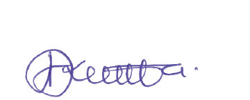

Shukurani
Taasisi ya Elimu Tanzania (TET) inatambua na kuthamini mchango muhimu wa washiriki kutoka taasisi mbalimbali za umma na binafsi zilizoshiriki kufanikisha uandishi wa kitabu hiki cha Sanaa na Michezo. Kipekee TET inatoa shukurani kwa Chuo Kikuu cha Dar es Salaam (UDSM), Idara ya Uthibiti Ubora wa Shule (UUS), vyuo vya ualimu na shule za msingi. Pia, TET inatoa shukurani za dhati kwa mchango uliotolewa na wataalamu wafuatao:
Bw. Mbezi S. Benjamin (TET), Bw. Peter O. Kazeni (TET) Bw. Given A. Mbakilwa (TET) na Bi. Debora J. Mironjo (TET)
Dkt. Daines N. Sanga (UDSM), Dkt. Kiagho B. Kilonzo (UDSM), Dkt. Kassomo A. Mkallyah (Mstaafu-UDSM), Dkt. Leonard C. Mwenesi (Mstaafu-UDSM), Dkt. Ismail N. Pangani (UDSM), Bw. James Payovela (TET), Bw. Victor K. Mutalemwa (UUS-Urambo), Bw. Beno L. Milinga (Chuo cha Ualimu Kitangali) na Bw. Selestine N. Kisabo (Mstaafu-Chuo cha Ualimu Butimba).
Bw. Hamisi A. Kumbuka
Bw. Fikiri A. Msimbe (TET), Bw. Hance E. Wawar (TET) na Bw. Yohana P. Mwenda
Bw. Mbezi S. Benjamin (TET) na Bw. Peter O. Kazeni (TET)
Vilevile, TET inatoa shukurani kwa walimu wote wa shule za msingi na wanafunzi walioshiriki katika ujaribishaji wa kitabu hiki. Mwisho, TET inaishukuru Serikali ya Jamhuri ya Muungano wa Tanzania kwa kuwezesha uandishi na uchapaji wa kitabu hiki.
